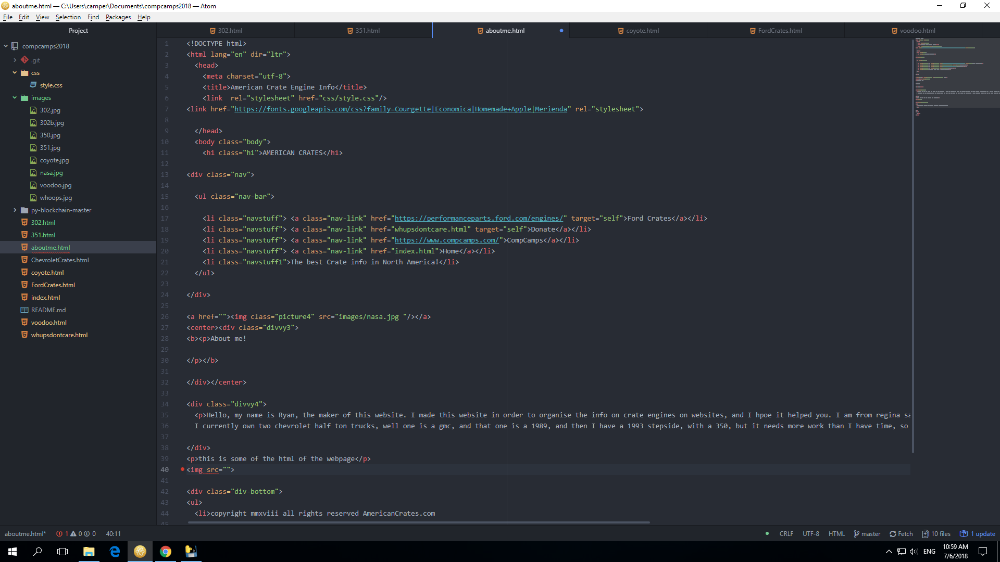

About me!
Hello, my name is Ryan, the maker of this website. I made this website in order to organise the info on crate engines on websites, and I hpoe it helped you. I am from regina saskatchewan, and I go to campbell colligiate, and work at clapped out tire. I currently own two chevrolet half ton trucks, well one is a gmc, and that one is a 1989, and then I have a 1993 stepside, with a 350, but it needs more work than I have time, so I am saving it for later. I love cars and math. I made this website at the MSI computer camp.
this is some of the html of the webpage
